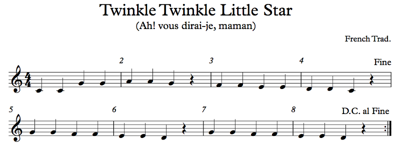
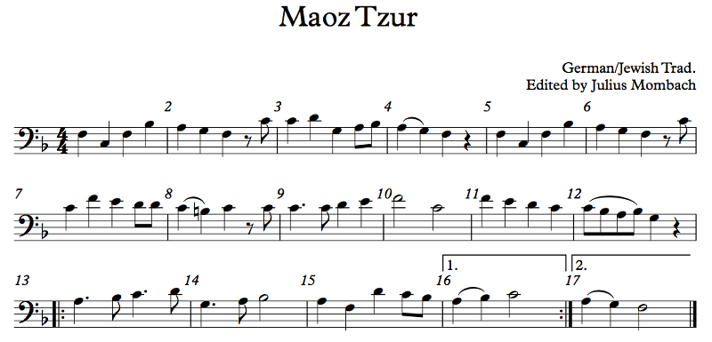

OFFTONIC THEORY — Chapter 1: The Basics
1.6 Singing
Wait wait wait, I saw the title of this section. Singing? Shirley, you can't be serious!
I am serious, and the word is "surely", not "Shirley". They sound similar, but they're spelled differently, just like F# and Gb.
No, I was calling you Shirley.
That's not my name. Why would you do that? I'm sorry, I think I must have missed something.
...Never mind!
Ooookay. So, singing. This is a vital skill for music theory, so let's try to get it right, OK?
But I'm not a singer... Do I really have to? What if I'm never going to be a singer?
Unless you're physically incapable of producing sound with your vocal cords (some people unfortunately have this disability), singing is the only way to properly train your ears to understand music theory. You may think that music theory is just naming stuff, but it's actually understanding music, and in order to do that you need to develop your ear. Some people try to do this by playing intervals over and over. We'll do that in a few chapters too (an interval is just the difference in pitch between two notes). But the only real way to do it is to sing.
Luckily, you have the tools. So let's just talk about what you have to do. If I could work with you directly, this is what we would spend time on. You have access to a keyboard (like the Offtonic Keyboard that you can open in a separate window). Try to do two things: play a note and then sing it, and sing a note and then play it. You can probably start by playing Middle C. There are four basic voice types (and a whole lot more subtypes): sopranos are women who sing high; altos are women who sing low; tenors are men who sing high; basses are men who sing low. It you're a bass, Middle C is on the upper part of your range. If you're a tenor, Middle C is about where your voice is powerful. If you're an alto, you can hit it comfortably in the middle to lower part of your range. If you're a soprano, it's probably pretty low for you. But everyone should probably be able to sing a Middle C. Try it. Hear the pitch in your head first (this is called imaging the pitch, or audiation), and then sing it. In fact, you should always image the pitch you're about to sing or play before you do so.
You need to figure out a couple of things here. One is how to change pitch. If you've never sung before, it can be a bit difficult to find the right muscles to do it. Try singing a note and then, without stopping the sound, going as low as you can and then as high as you can. You don't have to scream. You can just speak. When you ask a question, your pitch probably rises or falls, depending on the kind of question. Try to exaggerate that pitch change. If you can get a handle on how to make your pitch go up and down, and ideally do it softly (so that you don't bother your neighbors — you're not performing for them), you can figure out how to match the pitch of the keyboard.
Once you do, try to match the pitch an octave up or down. So, if you can get the notes around Middle C, try to get the notes around C5 but sing them an octave lower. So, for example, play an A4 but sing an A3. Or, play an A2 and sing an A3 or A4. This is important to do because a lot of the time you'll be trying to sing music that you can't physically sing. For example, if you want to understand a piccolo part, you probably won't be able to sing as high as the piccolo actually plays, so you should be able to sing the same thing but lower by a couple of octaves.
One thing you can do is simply sing along to music that you like. Put on your favorite Weird Al album while you shower and sing along to The Saga Begins (assuming your favorite Weird Al album is Running With Scissors). You don't have to sing loudly. You don't have to sing so that other people can hear you. Nobody needs to hear you sing other than yourself (and, for many of you, nobody wants to hear you sing, at least not yet).
There are a few common errors with singing, just like with rhythm. Actually, they're not just for singers. Many other instrumentalists have the same issues. Let's say the note to sing is a B. If you sing a Bb instead, you're singing the wrong note. Mistake. (Maybe you think it really ought to be a Bb, in which case it's creative differences, but let's assume you're actually trying to sing the B.) On the other hand, if you sing a B but do it too low or too high, you're flat or sharp, respectively. Certain intervals tend to go specifically flat or sharp; we'll talk about them later when we talk about intervals and ear training. How good you generally are at being on pitch (not flat or sharp) is your intonation. Now, don't confuse being flat or sharp with the accidentals. An F# is a specific note; an F sung sharp is just a wrong note where an F is a bit too high (unless the music actually calls for being out of tune, which is a possibility). You can't be flat or sharp on the piano unless the piano itself is out of tune. The Offtonic Keyboard is never out of tune, so if you and the keyboard don't agree on a pitch, the keyboard is right!
So what do I have to sing?
I will give you a bunch of examples, but right now, it would be useful for you to find some sheet music and just sing through it, using the keyboard as reference. You know how to read the notes. There are some details you may not have yet, but that doesn't matter too much. For example, find Bach's Well-Tempered Clavier (google IMSLP) and sing through some of the fugues, one voice at a time. You'll always need a keyboard to find your first note; this is called a reference pitch. Once you have that, see if you can get the next note without the keyboard. You may not be able to right away, but with a little bit of practice you'll be an expert!
And why do I have to do this, again?
The goal is for you to look at a piece of music and know what it will sound like without effort. This is what sightreading is, essentially: playing a piece of music you're seeing for the first time. Sightsinging is the same but with singing. When you play an instrument like the piano, you don't need to have a particularly great sense of pitch; you see a G on the music, you play a G on the piano. It's not so difficult. But to sightsing, you do need a great sense of pitch, and you need that for composition and analysis as well. By working on your singing, you will be working on that sense of pitch that you need. You need to hear the notes in your head (as I said earlier, this is called audiation) in order to analyze and understand them.
We'll talk more about singing in later chapters. You'll want to continuously improve on this skill.
Can you TL;DR what I'm actually supposed to do?
Sure. Look at the examples below. For each one, use a keyboard (a real one or the Offtonic Keyboard) to find the first note. Try to figure out the second note; check on the keyboard if you're right. Keep going, note by note. Then try to get the rhythms right; count them first if you need. Feel free to take things up or down an octave if they're out of your range. Here we go; let's start with an easy one:
Example 1.18
You hopefully know this melody (it's apparently French, and Mozart didn't write it; he just wrote variations on it).
Confused. What's that Fine thing? Who's feeling fine? Or looking fine?
Ah, see the repeat sign at measure 8? It's written "D.C. al Fine", and what this means is to repeat back to the beginning and stop when you get to where it says "Fine". "D.C." stands for "da capo", meaning "from the start", and "fine" means "end". Basically, it's a fancy repeat. There are a few others like it: "D.S." stands for "del segno", "from the sign"; somewhere in the music there'll be a weird symbol. Instead of "al fine" you may also see "al coda". A coda is an ending section, usually separate from the rest of the music. You'll go back to wherever you're asked (either da capo or del segno) and go on until you reach the coda symbol, at which point you'll teleport to the coda section, which will be clearly marked (with the same symbol, or even just the word "coda").
Example 1.19
This is a very traditional Jewish melody sung on Chanukah (the text is here if you care, along with some more information about the tune itself). This particular version of the tune has a little variation by Julius Mombach, an English cantor, and it's the version usually heard in England. Feel free to take parts of it up or down an octave; the tune has a fairly wide range. Don't forget to look at the key signature; this one means that all B's are flat (except of course for the B natural in measure 8).
What are those lines over measures 16 and 17?
First and second endings! The first time you sing this, take the first ending at measure 16. The repeat sign brings you back to measure 13. The second time, skip the first ending and go straight to the second ending at measure 17. Things can get more confusing, with third endings and such, but you should be able to figure them out.
How should I handle the slurs (measures 4, 8, 12, etc.)?
If you're singing this on "dah", don't put a D on the second note of the slur. So, for example, from pickups to measure 3, you'd say: da-dah dah dah da-da-dah-ah dah.
Pickups?
The Middle C eighth note before measure 3 is a pickup. It's basically part of the music that starts at measure 3, not the rest of measure 2.
How do I know when something is a pickup?
That's why you're singing this! I can't really explain to you when something is more properly a pickup and when it's more properly part of the earlier section; you need to listen to the music and use your ears to decide for yourself. If you see a lone eighth note, it's probably a pickup, and you should musically connect it to what follows it instead of what precedes it. Sometimes pickups are longer, possibly almost a full measure (or maybe even more). You should kind of hear an arrival point on the downbeat (that's the start of the measure), and you need to decide whether the stuff before that downbeat is leading into the downbeat or leading out of the previous material.

Example 1.20
Not to be confused with the Final Fantasy Prelude, the Prologue is considered the main theme of the Final Fantasy series. This right here is the reason why you spend hours on a Final Fantasy game. You get to the end, and it's just pure catharsis. I actually just saw on the Final Fantasy Wiki that they didn't include the Final Fantasy theme in FFX. I guess I don't need to play it after all. Anyway, watch the key signature on this one; there are lots of sharps.
Why does the end not feel like the end?
Because Square-Enix will never stop making new FF games?
Ha ha. No, seriously.
In a lot of videogame music, it's not clear how long it's supposed to actually play for. It could keep going for hours while the player makes his or her way through the levels. So, videogame composers have generally written music that loops back to the beginning, and the Final Fantasy theme is no exception. Since this theme transitioned to being in pre-scored ending sequences, though, where it doesn't actually loop, Uematsu wrote codas and transitions into other tunes where this melody happens. But the basic tune in Final Fantasy I still plays on a loop.

Example 1.21
Here's a great one. It's an Andalusian melody from the 15th century called, in Arabic, Lama Bada Yatathana; in the 19th century, a rabbi from Aleppo wrote Hebrew words that kinda sounded like the Arabic. I give you both names here. There are some great recordings on YouTube if you're interested.
First things first: what's up with the time signatures? You said everything would be in 4/4!
I lied! But 3/4 is actually just as easy to count as 4/4; you just count to 3 instead of 4. 1, 2, 3 instead of 1, 2, 3, 4. This song, however, is organized in a more complex way: each musical phrase is actually a measure of 3/4, a measure of 4/4, and a measure of 3/4.
So why not just write it in 10/4?
I could have done that. But I think it's important to understand what a measure actually is. You can feel the downbeat on each measure, and that is much more important than finding some common measure length. When you sing this, try to put extra weight on beat 1 of every measure and see how that feels. I think it feels more natural to do that than to do it with 10/4 bars instead. By the way, feel free to embellish the notes, too. Listen to some examples on YouTube (search both the Hebrew and Arabic names for more).
If you're curious, the percussion rhythm goes: 3 1, 3 1, 3 4 1; 3 1, 3 1, 3 4 1; etc. Try tapping your foot to that while you sing this.
Measure 11, why is the flat in parentheses?
Eb is already in the key signature, but I thought you might forget so I'm reminding you by putting it in parentheses. Part of the reason is that the distance from Eb to F# is three notes (from Eb, count up: E, F, F#), but Eb and F# are next to each other on the staff, so it's easy to forget that the E is flat. I didn't remind you when it happens again at measure 35. This Eb to F# jump is a large part of what makes this song sound Andalusian (Al-Andalus was Muslim Spain, if you're wondering, which lasted until the Catholic Kings defeated the Muslims in Granada in 1492, but much of the music is thankfully still with us).
And at 12, there are two notes at the same time! How am I supposed to sing/play that?
Generally, two or more notes at the same time like that form a chord. We'll be learning lots about that in later chapters; chords are one of the most important parts of music theory, if not the most important part. In this case, though, I'm just explicitly giving you a choice of octave. Some singers sing the upper octave and some sing the lower.
Anyway, those are the examples I have for now. Try to find sheet music of things that are new to you and sing it while playing the keyboard to get your notes. I'm hoping that you haven't seen some of the music I'm showing you so that you can learn without prejudice.
These were hard, though. Are they supposed to be this hard?
Practice! I hope Twinkle Twinkle Little Star was easy for you, but if you only read songs like that, you'll get really, really, really bored. I'm trying to show you music that's more real so that you can see the things you learn in action instead of in a carefully constructed sterile space. Sometimes key signatures have a lot of sharps; they can't all be the empty key signature. Sometimes time signatures change; they can't all be 4/4. The reason we do music in the first place is because music moves us. If the music doesn't move us, what's the point?
I really hope that you can find some good music to read. What "good music" means is up to you. Go forth!
Up: Chapter 1: The BasicsPrevious: 1.5 Counting Rhythms
Next: 1.7 Summary